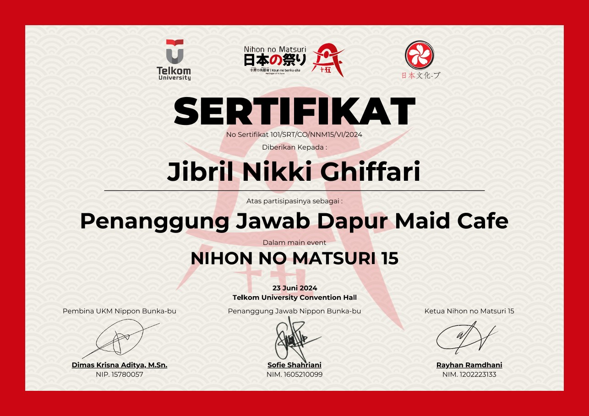

Photo caption: Nihon no Matsuri certificate
Reader's heads up: Nihon No Matsuri is a japanese cultural event that is held yearly in Telkom University.
[WRITER'S NOTE] This is a special one, and apart from all the organization that i've been a part of during college year, this one has always have a place in my heart. I spent around nine months as part of the organizing team for Nihon no Matsuri (NNM), one of the largest cultural festivals in Bandung in which i act as the part of business fund division. Throughout the event preparation, i participated in a series of preparatory activities such as fundraising, weekly group teamwork to build stage decorations, as well as cultural shinto shrine event accompanied by awesome and lovely team.
Despite being different from my typical Tech activities, NNM really was an eye opener for me. It taught me teamwork, collaboration, time management, communication, responsibility, decision making, adaptability and so much more. Its very packed schedule as well as its resolution to success the main event making it one of the best experience any organization could possibly offer.